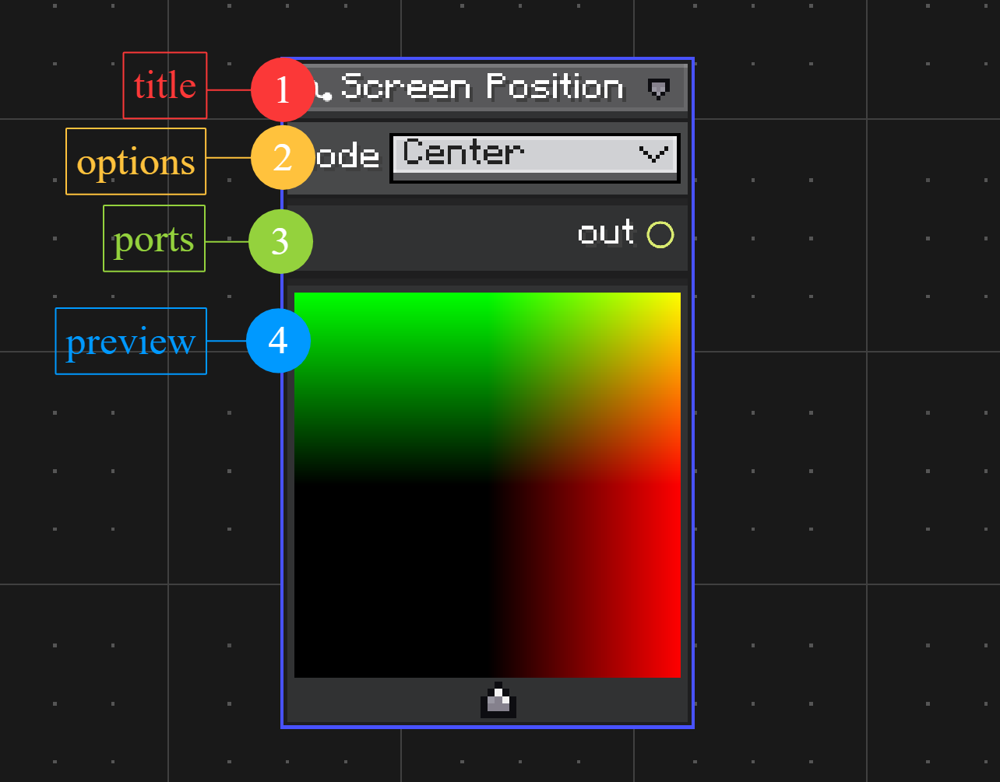
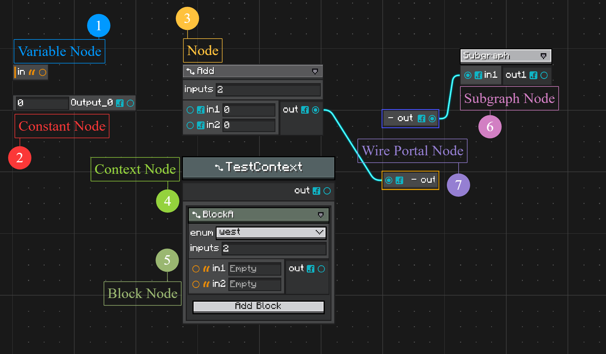

Nodes and Ports
User-created graph nodes extend Node.
public abstract class Node implements INode {
public abstract Component getDisplayName();
public void onDefineOptions(IOptionDefinitionContext context) {}
public void onDefinePorts(IPortDefinitionContext context) {}
}
onDefineOptions(...) runs before onDefinePorts(...). Use options when the node shape depends on editable values.
Options
Options are node settings. They can appear in the node header or only in the inspector.
@Override
public void onDefineOptions(IOptionDefinitionContext context) {
context.addOption("inputs", Integer.class)
.withDisplayName(Component.literal("Inputs"))
.withDefaultValue(2);
}
Read options while defining ports:
@Override
public void onDefinePorts(IPortDefinitionContext context) {
getNodeOptionById("inputs").tryGetValue(Integer.class).ifSuccess(value -> {
int count = (Integer) value;
for (int i = 0; i < count; i++) {
context.addInputPort("in" + (i + 1), Float.class);
}
});
context.addOutputPort("out", Float.class);
}
Useful option builder methods:
| Method | Use |
|---|---|
withDisplayName(Component) |
Label shown in UI. |
withTooltips(Tooltips) |
Tooltip text. |
withDefaultValue(Object) |
Initial value. |
showInInspectorOnly() |
Hide from node header. |
withConfigurable(ITypeConfigurable) |
Override editor UI for this option. |
withCodec(Codec<?>) |
Override serialization. |
withoutSerialization() |
Keep the type id, skip value persistence. |
withoutConfigurator() |
Store the value without exposing a UI row. |
Ports
Ports define graph connectivity.
@Override
public void onDefinePorts(IPortDefinitionContext context) {
context.addInputPort("a", String.class).build();
context.addInputPort("b", String.class).build();
context.addOutputPort("out", String.class).build();
}
Input ports can hold embedded constants while unconnected. This is why input builders expose configurator and serialization controls.
Useful port builder methods:
| Method | Use |
|---|---|
withDisplayName(Component) |
Label shown beside the port. |
withConnectorUI(PortConnectorUI) |
Custom connector icon. |
withOrientation(PortOrientation) |
Horizontal side port or vertical top/bottom port. |
withDefaultValue(Object) |
Initial embedded constant. |
withConfigurable(ITypeConfigurable) |
Input only: override editor UI. |
withCodec(Codec<?>) |
Input only: override constant serialization. |
withoutSerialization() |
Input only: non-persistent value. |
withoutConfigurator() |
Input only: hide constant editor. |
Vertical Ports
Vertical ports render above or below the node body.
context.addInputPort("flow", TypeHandles.EXECUTION_FLOW)
.withOrientation(PortOrientation.Vertical)
.build();
Vertical input ports hide their inline configurator by default. Override GraphModel.showVerticalPortConfigurator() if a graph type needs visible vertical port values.
{kind=link}

Node Anatomy
The marked areas in the screenshot are:
-
Title
Shows the node display name fromgetDisplayName(). The title row also holds small node controls, such as collapse and preview controls when they are available. -
Options
Shows node options defined inonDefineOptions(...). Options are useful for values that change how the node is built, such as enum modes, counts, or configuration fields. -
Ports
Shows input and output ports defined inonDefinePorts(...). Ports are connection points for wires. Input ports can also show an embedded constant editor while they are not connected. -
Preview
Shows the optional preview panel created byhasNodePreview()andonBuildNodePreview(...). Use it for nodes that need visual feedback, such as color, texture, shader, or procedural result nodes.
{kind=link}

Node Types
The graph editor uses several node model types. They share the same canvas and wire system, but they are created and used differently.
-
Variable Node
Reads from or writes to a graph variable. Create variables in the blackboard, then create variable nodes from that declaration. Variables are covered in Variables and Blackboard. -
Constant Node
Provides a fixed value as an output port. Use it when a value should be visible as a node instead of an inline input-port constant. Constant values useTypeHandlesupport and the same configurable system as port values. See Type Handles. -
Node
A normal user-defined node created by extendingNodeand registering it with@NodeAttribute. Define its editable options inonDefineOptions(...)and its ports inonDefinePorts(...). -
Context Node
A node that owns an ordered list of child block nodes. Use it for structures such as sequences, branches, states, or grouped operations. See Context and Block Nodes. -
Block Node
A child node that lives inside a context node instead of directly on the graph canvas. Create block node classes by extendingBlockNodeand binding them to compatible contexts with@UseWithContext. See Context and Block Nodes. -
Subgraph Node
Represents another graph. Its ports are generated from the inner graph's exposed variables. Use it to reuse graph logic or edit nested graphs throughGraphEditorView's breadcrumb. See Subgraphs. -
Wire Portal Node
Routes a wire through a named portal pair, useful when long wires make a graph hard to read. Create portals from wire commands or graph context actions. See Commands and Customization.
Node Preview
A node can render a preview panel under its body.
@Override
public boolean hasNodePreview() {
return true;
}
@Override
public void onBuildNodePreview(NodePreviewContext context) {
context.content().addChild(createPreviewElement());
}
@Override
public void onUpdateNodePreview(NodePreviewContext context) {
context.rebuild();
}
Use previews for nodes that benefit from visual feedback, such as shader, texture, color, or procedural output nodes.